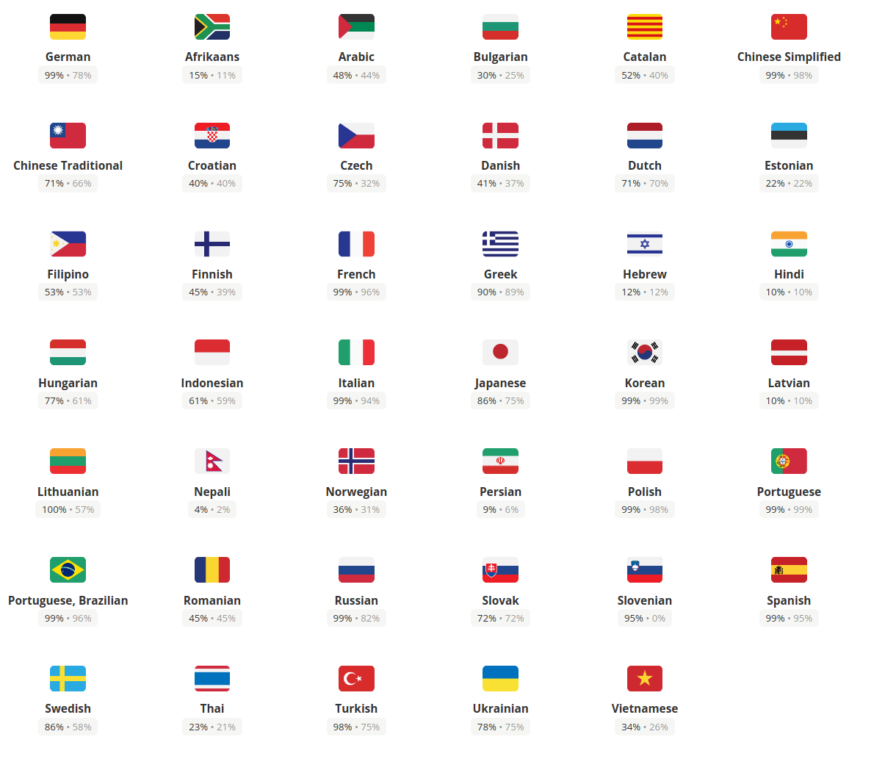

OpenProject is currently being translated in over 40 languages. We use a cloud translation service called Crowdin for allowing the community and professional translators to contribute translations to OpenProject.
Not all translations are fully translated, and they will fallback to english strings for the untranslated portions.

Translations in OpenProject…
The OpenProject localizable strings are stored in the Rails-standard I18n YAML files. The core only manages english source strings in en.yml and js-en.yml files. The can be found at config/locales/en.yml and config/locales/js-en.yml, respectively.
Additionally, modules can define their own translations, such as modules/budgets/config/locales/en.yml.
The js-en.yml are not special on their own, but are simply prefixed with the js: key at the beginning of the while. This means all translations within are prefixed with the js. key. This is picked up by I18n.js, a Ruby gem and frontend library that helps outputting javascript objects for the frontend. Only strings that are prefixed with js. and some internals will end up in the frontend due to the config we applied in config/i18n-js.yml. The translations are output by the take task ./bin/rails i18n:js:export and are output to frontend/src/locales/{language}.js.
You are likely familiar already with the I18n.t helper provided by Rails. We simply use this helper to localize strings. Translations are simply loaded by Rails and available everywhere in the application.
Let’s say want to add a specific label to a work package page and use that in a HTML ruby file, you should go through this way:
You have to add the below rows to the appropriate en.yml file. If you’re editing a module, add the string to the module’s config/locales/en.yml file.
You should prefix your string unless its something very generic:
# ...
work_packages:
my_specific_page:
my_button: "My localized button label"
You can then use the t() helper method in the Rails erb view to translate the string:
<%= styled_button_tag t('work_packages.my_specific_page.my_button') %>
Outside of the views and controllers, you need to use the module function I18n.t to be used, for example in Ruby tests:
expect(page).to have_selector('button', text: I18n.t('work_packages.my_specific_page.my_button'))
The Rails guide on translations will give advanced examples on variable interpolation and the like: https://guides.rubyonrails.org/i18n.html
The frontend receives all translations prefixed with js. (see above) through compiled javascript files from frontend/src/locales/{language}.js folder generated by I18n.js. These locales are loaded early on in the application in frontend/src/main.ts to ensure they are present when the page loads. The import happens dynamically so only the language the user has selected is going to be loaded by webpack.
If you want to create an angular component named ‘news’ and translate the text of a “save news” button and author of the news, you should go through this way:
You have to add the below (exemplary) entry to the js-en.yml file
js:
# ... other values
news:
button_save: "Save news"
label_added_by: "Added by %{author}"
You will then need to access the Angular I18nService that provides access to the I18n.js helper. Right now, there is also a window global I18n that works, but it is not recommended to use that wherever you can inject the service instead.
In the news.component.ts, you should import the I18nService. Then you have to define a property named ‘text’ used for all text in your component, like below:
public text = {
saveButton: this.I18n.t('js.news.button_save'),
addedBy: (news:NewsResource) => this.I18n.t('js.news.label_added_time_by', { author: news.author}
};
Then you can use them as below in your template:
<button type="submit" class="button -highlight">
<span class="button—text" [innerText]=”text.saveButton”></span>
</button>
<div *ngIf="news.author" class="news-author">
<span [innerText]="text.addedBy(news)"></span>
</div>
For more information on formatting and other helpers of the I18n.js library, see https://github.com/fnando/i18n-js